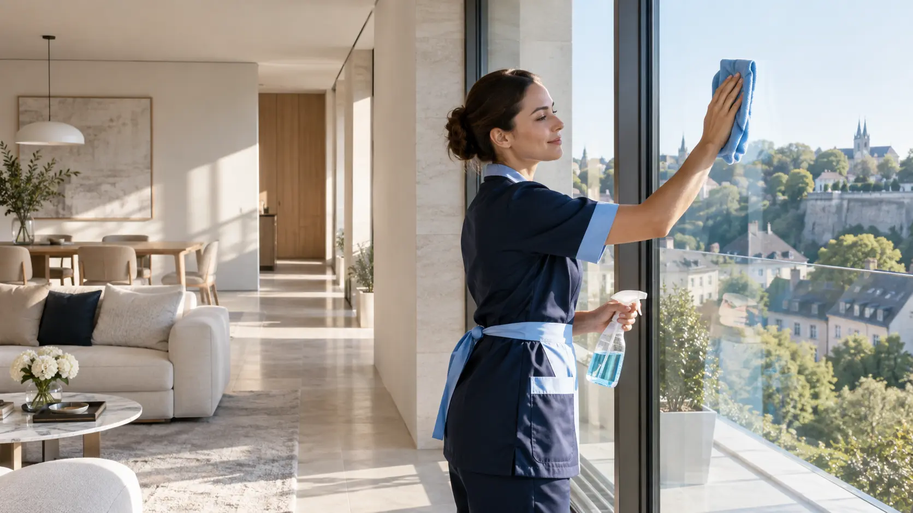
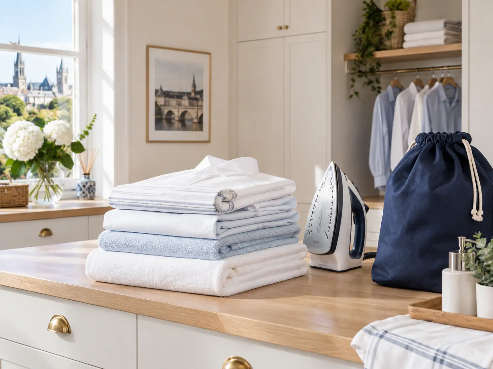

Intérieur & extérieur
Nettoyage d’appartements, de maisons et de locaux, adapté à votre espace et à votre rythme.
Demander un devis →Un service soigné pour votre maison, appartement, immeuble ou local professionnel—partout au Luxembourg.

ETA prend soin des espaces intérieurs comme extérieurs avec une organisation simple, une intervention précise et un résultat à la hauteur.
Nettoyage d’appartements, de maisons et de locaux, adapté à votre espace et à votre rythme.
Demander un devis →Entretien régulier des espaces communs pour un cadre propre et accueillant au quotidien.
Sols, rampes et paliers nettoyés avec méthode dans les résidences et bâtiments.
Élimination des poussières et résidus pour rendre les lieux propres, nets et prêts à vivre.
Nettoyage extérieur approfondi pour redonner de l’allure à vos surfaces et accès.
Vide-maison, cave et grenier : une solution pratique pour libérer et remettre en ordre vos espaces.
Parler de votre projet →
Nous collectons votre linge à domicile, prenons soin du lavage et du repassage, puis vous le livrons rapidement une fois prêt.
Expliquez-nous le lieu, le service souhaité et vos disponibilités.
Nous convenons d’une intervention ponctuelle ou d’un entretien régulier.
Une prestation méthodique, rapide et adaptée à vos besoins.
Découvrez nos principales zones d’intervention. Vous êtes ailleurs au Grand-Duché ? Appelez-nous pour vérifier nos disponibilités.
Maison, résidence, chantier, extérieur ou linge : vous disposez d’un seul contact pour organiser les services dont vous avez réellement besoin.
Nous intervenons dans les appartements, maisons, locaux, immeubles et résidences, à l’intérieur comme à l’extérieur.
Oui. Nos services peuvent être organisés ponctuellement ou régulièrement, selon votre situation.
Oui, nous proposons un nettoyage après chantier ainsi que le nettoyage des terrasses, pavés et autres surfaces extérieures.
Nous collectons votre linge à domicile, assurons le lavage et le repassage, puis le livrons rapidement une fois prêt.